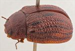
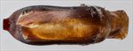
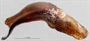
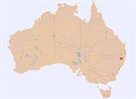

Click on images to enlarge
{kind=link}

Male, Glencoe, N.E. New South Wales
{kind=link}

Aedeagus, dorsal view (Glencoe, N.E. New South Wales)
{kind=link}

Aedeagus, lateral view (Glencoe, N.E. New South Wales)
{kind=link}

Distribution
Name
Trachymela sp. Ta55
Reference specimen
1998-1013, Glencoe, NE New South Wales.
Adult Description
Length: ♂ 9.9 mm (n=1), ♀ unknown.
[Description based on the single (male) specimen available.]
Colouration:
- Head: Almost uniformly mid-brown, labrum straw-brown, mandibles black-tipped; antennomeres 1–4 light-brown, 5–6 grading from light-brown to black, with distal parts usually darker, 7–11 dark-brown.
- Pronotum: Brown, concolorous with head, with vague, irregular areas of darker shade.
- Scutellum: Brown, concolorous with adjacent region of pronotum, narrowly edged in darker brown.
- Elytra: Brown, concolorous with pronotum, with 5 longitudinal, relatively thin bands of black: (1) the broadest is a band that extends for a short distance spaced just a little away from elytral suture near highest point, (2) runs from just behind anterior edge between humeral callus and scutellum to a little way from apex, but is interrupted where it crosses the antero-median depression, (3) extends from a little behind and just above humeral callus towards the end of line 2 without quite reaching it, (4) is the longest line, extending from humeral callus to just anterior to and above elytral apex, and (5) extends along discal margin from a little behind humeral callus to some distance before apex, but is sometimes weak and partially interrupted along its length; punctures often outlined in a fractionally darker shade, humeral callus black along its centre.
- Venter & Legs: Venter uniformly reddish-brown with edges of ventrites darker, epipleura brown.
- Cuticular Wax: Light scatter recorded for the single specimen known.
Morphology:
- Head: Punctures moderate in size (pd ≈ 2× ef) and quite evenly and densely distributed, interstices thickened in places but never very rugose. Antennae moderately long (AL/BL: ♂ 43.2%, ♀ unknown), filiform.
- Pronotum: Evenly curved transversely over discal region with a barely perceptible explanation at far margins, foveal depression absent; a round, very slightly elevated patch present behind eye interrupting distribution of punctures only via slightly thickened interstices; puncturation on disc clearly and deeply impressed, evenly and quite densely distributed in discal area though with a few thickened interstices present in places, with a mix of puncture sizes usually present, the largest slightly larger than those on head, becoming noticeably coarser at lateral margins. Front margins join lateral margins in a very smoothly rounded right-angle, with lateral margin curving smoothly and gradually towards rear margin.
- Scutellum: Lightly punctured anteriorly with punctures somewhat smaller than those on adjacent area of pronotum.
- Elytra: Body quite evenly rounded but relatively flat, highest point near middle of elytral margin, ventrites project slightly below elytral epipleurae. Surface slightly flattened around highest point; punctures relatively evenly distributed and deep, almost everywhere except around scutellum obscured by a network of thickened interstices; many pimple-like verrucae, concolorous with substrate, present at intersections of interstices, these aligned in longitudinal series, both within the black bands as well as in series situated between these rows, rarely joining to form short, longitudinally extended verrucae; posterior third of elytral suture slightly carinate, marginal sulcus well-developed in posterior half, surface discontinuous under humeral callus. Vertical extension of epipleurae slight (HCE/PW = 0.27).
- Venter: Prosternal process narrowest and lightly closed anteriorly; short setae present at rear of prosternal process and on mesoventrite; single seta on anterior and median trochanter; front edge of metaventrite beveled, truncate; inner edge of posterior of epipleura lacking setae.
Male Genitalia (Aedeagus):
- Dimensions: Moderately long (LPE/BL = 34.7%).
- Dorsal view: Sides of shaft slightly sinuate over central section, narrowing slightly from basal sulcus before widening to reach its widest about 30% of length from apex, from there the sides converge towards apex in an uneven arc, initially very gradually, then more rapidly; dorsal surface smoothly curved with faint dorso-median channel usually present for a short distance from ostium; dorsolateral channels well-defined; tip broad and blunt, spatula broad and long.
- Lateral view: Shaft curved around basal sulcus, then straight to a pronounced downward bend about 40% of distance from apex, thinning towards apex over about 30% of length, tip strongly deflexed, flagellum thin.
Immature Stages
Unknown.
Similar species
- Ta20: Easily distinguishable from Ta55 by the much darker elytra that do not have the prominent bands of black as well as the finer puncturation of the pronotal disc.
- Ta37: Superficially similar as it has similar thin, longitudinal black stripes on its elytra as Ta55. However, it is a smaller species and its elytral interstices are smooth, the puncturation of the pronotal disc is also much smoother, and the apex of the aedeagus is not truncate.
Notes
- Taxonomy: An easily recognizable species from the black lines on the elytra and the deeply and ruggedly punctured pronotum. The structure of the aedeagus, with its truncate apex, is very similar to that of Ta20 and Ta54, though is much more strongly curved in lateral view than in either of these two species.
- Host Associations: Collected from Eucalyptus obliqua, although there is some doubt about that identification.
Copyright © 2026. All rights reserved.